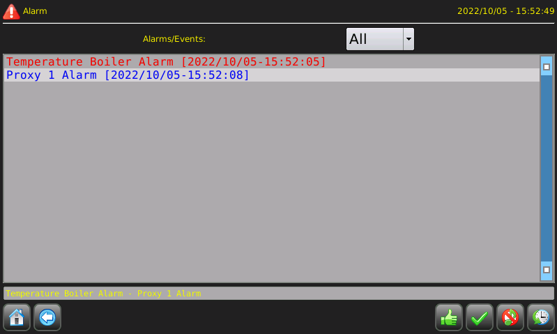

Pagina alarms
Per visualizzare la pagina degli allarmi si può usare un ATCMbutton e inserire nella proprietà “pageName” la parola “alarms”. Vedi capitolo “Pagine di libreria”.

In alto, è presente una combobox nelle quale si può selezionare il tipo (All, Alarm e Event). Queste
selezioni saranno usate per gli allarmi visualizzati nella lista scorrevole sottostante. In questo oggetto, sono elencati gli allarmi
attualmente visibili. Subito sotto è presente un banner che mostra a turno i vari allarmi visibili attualmente.
Sul fondo, accanto ai soliti tasti di Home e Back ci sono anche i seguenti tasti:
 tasto per fare il riconoscimento di un allarme precedentemente selezionato dalla lista scorrevole soprastante;
tasto per fare il riconoscimento di un allarme precedentemente selezionato dalla lista scorrevole soprastante;
 tasto per fare il riconoscimento di tutti gli allarmi visibili;
tasto per fare il riconoscimento di tutti gli allarmi visibili;
 tasto per disabilitare il suono dell’allarme;
tasto per disabilitare il suono dell’allarme;
 tasto per passare alla pagina dello storico degli allarmi.
tasto per passare alla pagina dello storico degli allarmi.